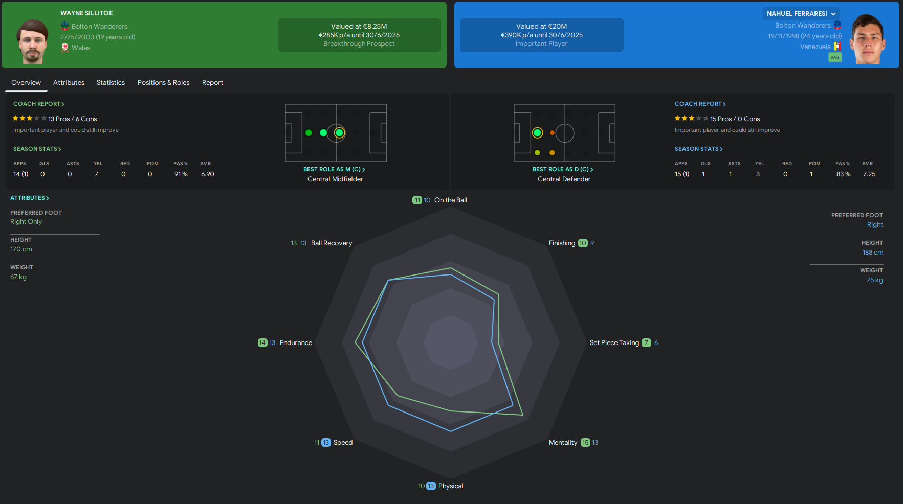
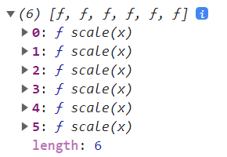
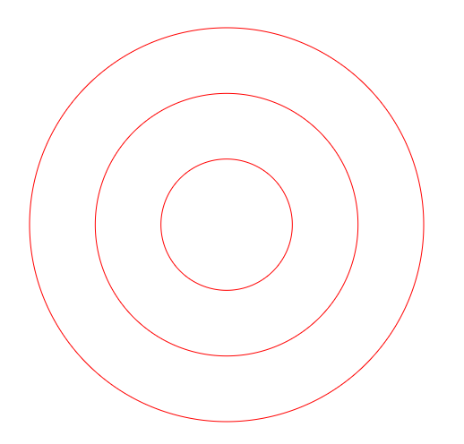
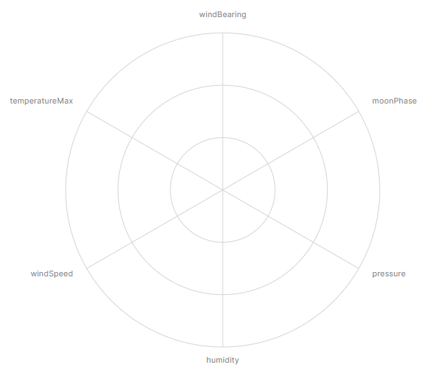
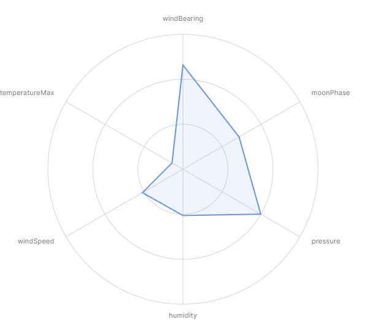
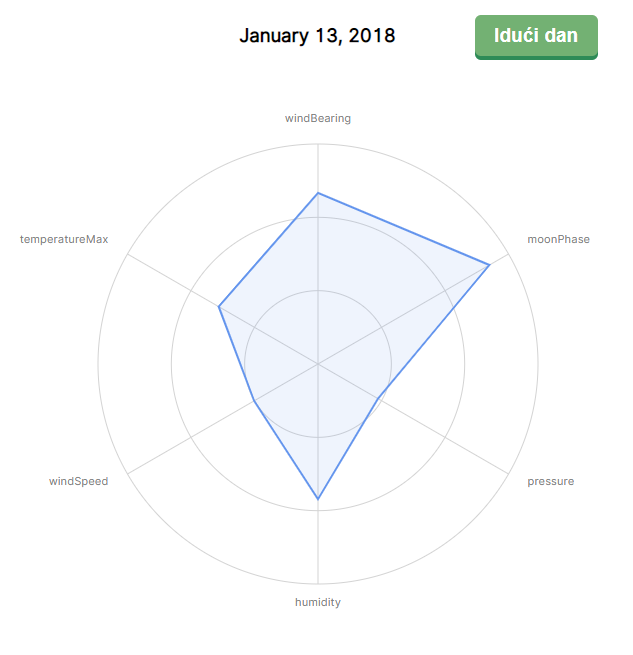

Vizualizacija podataka
Vježba 07
Vježba 07
- Iskoristiti ćemo naš skup podataka kako bi ih prikazali u obliku radar grafa
- Nije često korištena vrsta grafa ali može biti koristan za prikaz nekoliko metrika odjednom
- ne možemo direktno uspoređivati podatke na istom prikazu (osim ako nisu svi u istom rasponu)
- možemo uspoređivati uzorke (poligone) u različitim prikazima

Vježba 07
- Krenimo od predloška projekta
- imamo praznu HTML datoteku sa jednim button elementom
- gotovu CSS datoteku
- uključenu (praznu) JS datoteku
- već poznati skup sa vremenskim podacima
Učitavanje skupa podataka
- Prvi korak je učitavanje podataka
- radimo sa datumima pa će nam trebati mogućnost parsiranja datuma iz stringa
- također će nam trebati accessor funkcija za dohvaćanje (parsiranog) datuma iz skupa podataka
// 1. Pristup podacima
let dataset = await d3.json("../vrijeme.json")
console.log(dataset)
const datumParser = d3.timeParse("%Y-%m-%d")
const datumAccessor = d => datumParser(d.date)
// Opcionalno sortiramo dataset
dataset = dataset.sort((a,b) => datumAccessor(a) - datumAccessor(b))Učitavanje skupa podataka
- Nakon učitavanja podataka moramo odabrati metrike koje ćemo prikazati na radaru
- odabrati ćemo 6 metrika (iz skupa podataka)
const metrike = [
"windBearing",
"moonPhase",
"pressure",
"humidity",
"windSpeed",
"temperatureMax",
]Dimenzije grafa
- Idući korak je definiranje dimenzija grafa (okvira)
- graf bi trebao biti kvadratnog oblika
- margine će biti iste sa svih strana (radar će biti u sredini)
- Imamo novu mjeru uz visinu i širinu
- polumjer (može nam biti polovicu širine)
- Ne zaboravite mjere za dimenzije granica
- trebati će nam i središte (početna točka polumjera)
const sirina = 600
let dimenzije = {
sirina: sirina,
visina: sirina,
polumjer: sirina / 2,
margine: {top: 80, right: 80, bottom: 80, left: 80},
}
dimenzije.grSirina = dimenzije.sirina - dimenzije.margine.left - dimenzije.margine.right
dimenzije.grVisina = dimenzije.visina - dimenzije.margine.top - dimenzije.margine.bottom
dimenzije.grPolumjer = dimenzije.polumjer
- ((dimenzije.margine.left + dimenzije.margine.right) / 2)
Crtanje grafa
- Nakon dimenzija potrebno je iscrtati "okvir" grafa
- dohvatite HTML dio i dodajte mu SVG element
- Granice su "g" element koji je translatiran za iznos margina
// 3. Crtanje granica
const okvir = d3.select("#okvir")
.append("svg")
.attr("width", dimenzije.sirina)
.attr("height", dimenzije.visina)
const granice = okvir.append("g")
.style("transform",
`translate(${dimenzije.margine.left}px, ${dimenzije.margine.top}px)`)Definiranje razmjera
- Sada imamo malu promjenu
- potrebno je definirati razmjer - ali imamo više metrika
- Umjesto jedne skale potrebno je napraviti niz sa različitim skalama (raspon je isti za sve, ali domena je različita)
- Pomoću niza metrika napravite niz funkcija za skaliranje
- sve bi trebale biti linearne
const razmjeriMetrika = metrike.map(metrika => (
d3.scaleLinear()
.domain(d3.extent(dataset, d => +d[metrika]))
.range([0, dimenzije.grPolumjer])
.nice()
))
console.log(razmjeriMetrika)
Crtanje pomoćne grafike
- Kod ove vrste grafa moramo napraviti manju izmjenu koraka
- prvo iscrtavamo pomoćne linije radara (da budu ispod podataka)
- Na granice dodajte novi "g" element
- unutar njega moramo iscrtati 3 kružnice različitih polumjera
- možete koristiti d3.range(1,4) za generiranje niza [1,2,3]
- dodajte kružnicama klasu "radar-pravac" (CSS pravilo)
- unutar njega moramo iscrtati 3 kružnice različitih polumjera
const osi = granice.append("g")
const radarKruznice = d3.range(1,4).map((d) => (
osi.append("circle")
.attr("cx", dimenzije.grPolumjer)
.attr("cy", dimenzije.grPolumjer)
.attr("r", dimenzije.grPolumjer * (d / 3))
.attr("class", "radar-pravac")
))
Crtanje pomoćne grafike
- Osim kružnica moramo iscrtati i pravce (line elementi - 6 komada)
- Svi počinju na istoj lokaciji ( x1, y1 = središte kružnice)
- određivanje x2,y2 zahtijeva malo trigonometrije
- određivanje stranica pravokutnog trokuta
- hipotenuza je polumjer
- druge dvije stranice su x i y pomak
- klasa "radar-pravac" za oblikovanje
- određivanje x2,y2 zahtijeva malo trigonometrije
const radarPravci = metrike.map((metrika, i) => {
const kut = i * ((Math.PI * 2) / metrike.length) - Math.PI * 0.5 // radijani
return osi.append("line")
.attr("x1", dimenzije.grSirina / 2)
.attr("x2", Math.cos(kut) * dimenzije.grPolumjer + dimenzije.grSirina / 2)
.attr("y1", dimenzije.grVisina / 2)
.attr("y2", Math.sin(kut) * dimenzije.grPolumjer + dimenzije.grSirina / 2)
.attr("class", "radar-pravac")
})Crtanje pomoćne grafike
- Uz svaki pravac ćemo iscrtati i ime metrike
- ponovno moramo izračunati gotovo identične lokacije samo još malo udaljene od središta kružnice
- jedini problem je poravnanje oznaka (klasa "ime-metrike")
- to radimo uz pomoć "text-anchor" svojstva i uvjetnih izraza
const oznake = metrike.map((metrika, i) => {
const kut = i * ((Math.PI * 2) / metrike.length) - Math.PI * 0.5
const x = Math.cos(kut) * (dimenzije.grPolumjer * 1.1) + dimenzije.grSirina / 2
const y = Math.sin(kut) * (dimenzije.grPolumjer * 1.1) + dimenzije.grVisina / 2
return osi.append("text")
.attr("x", x)
.attr("y", y)
.attr("class", "ime-metrike")
.style("text-anchor",
i == 0 || i == metrike.length / 2 ? "middle" :
i < metrike.length / 2 ? "start" :
"end"
)
.text(metrika)
})
Iscrtavanje podataka
- Sada možemo krenuti sa iscrtavanjem podataka
- unutar granica grafa ćemo dodati prazni "path" element sa klasom "pravac"
const pravac = granice.append("path")
.attr("class", "pravac")Iscrtavanje podataka
- Morati ćemo više puta iscrtavati putanju poligona pa ćemo napraviti funkciju koja prima jedan podatkovni element (dan)
- koristimo metodu d3.radial() koja generira putanju za pravac ali koristeći radijalne, a ne Kartezijeve koordinate (0° je na "vrhu")
- Kod dodavanja elemenata razlika je što koristimo metodu .datum() za pridruživanje cijelog podatka ("datum" je engleska verzija jednine za riječ "data") - nema "rastavljanja" podataka
const crtajPravac = (dan) => {
const generatorPravca = d3.lineRadial()
.angle((metrika, i) => i * ((Math.PI * 2) / metrike.length))
.radius((metrika, i) => razmjeriMetrika[i](+dan[metrika] || 0))
.curve(d3.curveLinearClosed)
const pravac = granice.select(".pravac")
.datum(metrike)
.attr("d", generatorPravca)
.style("transform",
`translate(${dimenzije.grPolumjer}px, ${dimenzije.grPolumjer}px)`)
}Iscrtavanje podataka
- Ako smo sve dobro napravili možemo pozvati našu funkciju i iscrtati prvi podatak (dan) iz skupa podataka
crtajPravac(dataset[0])
Iscrtavanje podataka
- Dodati ćemo mogućnost promjene datuma
- za početak će nam se iscrtati prvi dan
- dodati ćemo click event za promjenu dana
- iznad grafa ćemo ispisati datum
let indeksAktivnogDana = 0
const naslov = d3.select("#naslov")
const formatDatuma = d3.timeFormat("%B %-d, %Y")
const osvjeziGraf = () => {
naslov.text(formatDatuma(datumAccessor(dataset[indeksAktivnogDana])))
crtajPravac(dataset[indeksAktivnogDana])
}
osvjeziGraf()
d3.select("#iduci-dan").on("click", e => {
indeksAktivnogDana = (indeksAktivnogDana + 1) % dataset.length
osvjeziGraf()
})Iscrtavanje podataka
- Rezultat je radar graf koji istovremeno pokazuje 6 različitih metrika za jedan dan
